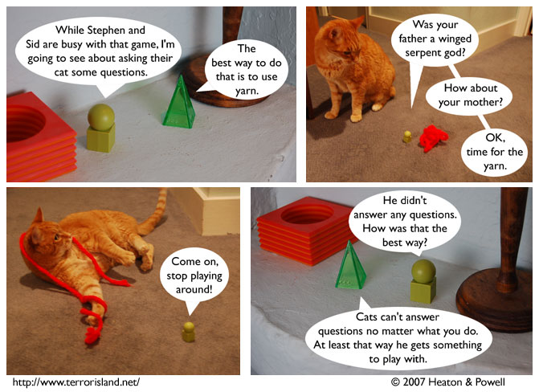

Strip #88
— Wednesday, January 3, 2007
First Folio has a terrible memory for which species lack the power of speech.
Notes, Thoughts, &c.
Ben’s Notes
Some of you may be excited to know that Pponderings Us has returned from its hiatus. I used to be pretty active on their forum, and I’m looking forward to seeing where the strip goes next.
Lewis’s Notes
Today I return to Los Angeles.
I wrote this thing, about what makes things funny. Its not very funny itself, but I found the topic very interesting, and so I thought I’d share it with you all.